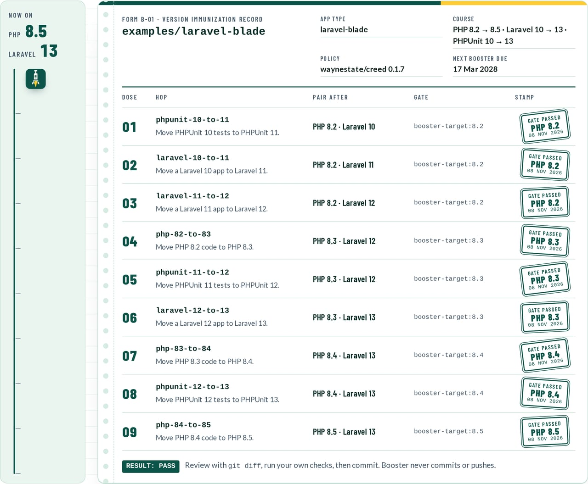
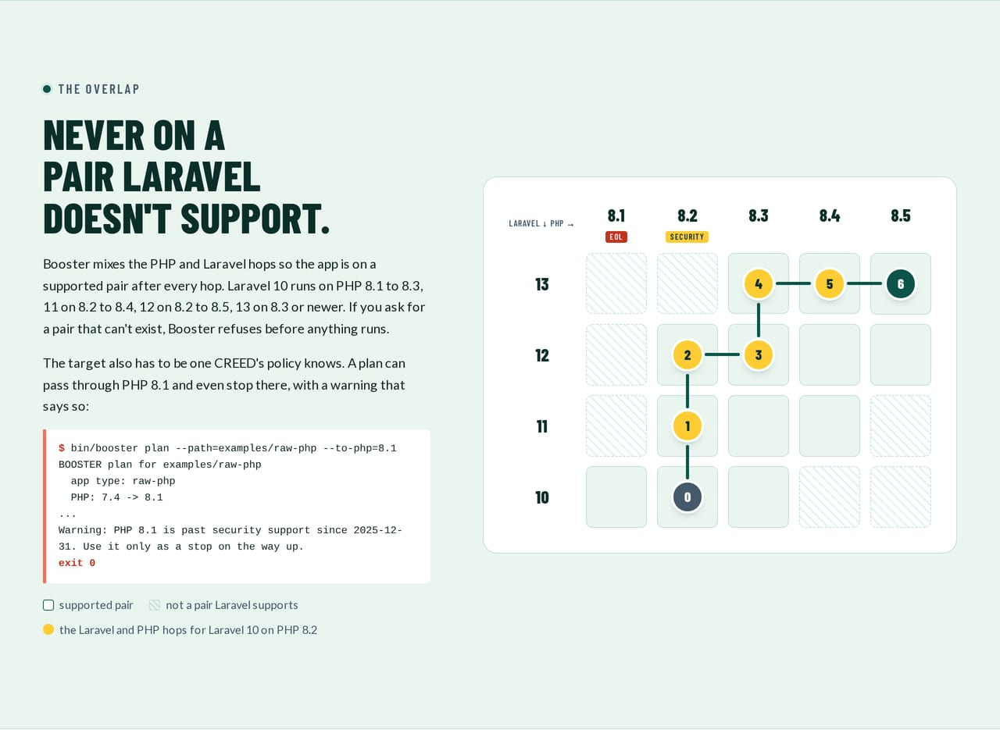

Quick start#
This page runs Booster on an app for the first time. Next: What a hop does for what each step does.
booster detect --path=../my-app # which of the five permutations, and which versions
booster plan --path=../my-app # the ordered hops to a supported version
booster scan --path=../my-app --php=<target> # what will break on that newer PHP; advisory, changes nothing
booster run --path=../my-app --dry-run # the diffs Rector would make; changes nothing
booster run --path=../my-app # apply the plan, one hop at a time, with a test gate
booster init --path=../my-app # optional: writes playbooks for AI coding tools into the app; commit them before a real run
Replace <target> with the PHP version you are heading for, for example the one plan shows on its last step.
A real run needs git and Docker on the machine that runs Booster. If you used the Docker-only route, the first four commands above work as they are, but the last one does not: its php:8.4-cli image has no git. Use the single-file or clone route for booster run (see Install).
Booster prints its progress lines on standard error. In Windows PowerShell they print in red, as if they were errors. They are not errors; the exit code tells you whether the run worked.
What a run does by default#
You can run detect, plan and run on an app with nothing after --path. Booster then goes as far as it safely can on its own: it climbs to the newest PHP and Laravel that CREED's policy supports today, which is PHP 8.5 and Laravel 13 as of this writing (the policy file is the source of truth, not this page).
| Command | With no other flags |
|---|---|
booster detect |
Reads composer.json and composer.lock, and reports PHP, Laravel, PHPUnit and the front-end setup. Changes nothing. |
booster plan |
Starts from what detect found and plans every hop up to the newest PHP, Laravel and PHPUnit the policy supports. Changes nothing. |
booster run |
Does the whole plan in one go, in order. |
How many hops? One for every step on the way, never a jump:
- one hop per PHP minor (8.1 to 8.2 is a hop, 8.2 to 8.3 is another),
- one hop per Laravel major,
- one hop per PHPUnit major.
Booster interleaves them so the app sits on a PHP and Laravel pair that Laravel supports at every step: a Laravel step as soon as the current PHP allows it, a PHPUnit step when the PHP allows it, a PHP step otherwise. Two real examples: a Laravel 10 app on PHP 8.1 plans 11 hops, and a PHP 5.5 app with no framework plans 12 hops to PHP 8.5.
Some hops come along by default, and some only when you ask:
- The front-end Node hops (Mix to Vite, Vite major, Tailwind, TypeScript, Vue) are in the plan by default. Pass any target (
--goal,--to-php,--to-laravel,--to-phpunit,--from-php,--from-laravel) and they drop out with a warning, unless you add--with-node. - An app on PHPUnit 8 or older gets a manual PHPUnit 9 step before the first PHP 8 hop.
- The SESAME move (
--sesame) and the WayneUI move (--wayneui) are opt-in only. --skip <hop id>drops a hop you do not want.- If a target is past security support, the plan stops at the policy limit and warns. If Rector has no ruleset for a step yet, the plan stops short and warns.
run handles each hop the same way: a Rector preview, then the edits (if a hop would change more than 200 files it asks first, or stops when it cannot ask; --max-changes sets a hard limit), then the Composer constraints, then your tests in the target PHP image. That last part is the gate. The first hop that fails stops the run, and the hops after it are reported as "not run". Booster never commits; the changes sit in your working copy for you to review. Progress prints one line per hop, like hop 3/11 <hop id>: <status>, 12 files, 41 s, and ends with run finished: 11 of 11 hops run, 0 stopped, ....
Looking for a specific situation (only PHP, one hop at a time, backend only, a big app, no tests)? See How do I....
Want less than the whole climb (we will not judge, it is a long way up)?
--dry-runpreviews every hop and changes nothing.--until <hop id>keeps that hop and everything before it.--only <hop id>runs just that one hop.--to-phpand--to-laravelpick a lower target.
The one-command form for a forced image upgrade:
booster run --path=../my-app --goal=php-74-to-84
When the app carries a composer.lock, detect also reads the PHP range the locked packages allow: the highest
require.php floor and the lowest ceiling across packages and packages-dev, raised by a platform-overrides.php
or config.platform.php pin in composer.json when one is set. If that floor sits above the floor composer.json
claims, Booster plans from the lock's floor and prints a warning saying so; if the first PHP hop lands at or above
the lock's ceiling, a second warning notes that hop will need a composer update to keep the lock installable.
Without a lock, composer.json stays the sole source.
A plan for the bundled Laravel 10 example app on PHP 8.2 looks like this (the order keeps the app on a PHP and Laravel pair Laravel supports at every step):
booster plan --path=examples/laravel-blade --today=2026-10-29
BOOSTER plan for examples/laravel-blade
app type: laravel-blade
PHP: 8.2 -> 8.5
Laravel: 10 -> 13
PHPUnit: 10 -> 13
policy: waynestate/creed 0.1.4 (today 2026-10-29)
1. phpunit-10-to-11
Move PHPUnit 10 tests to PHPUnit 11.
After this step your tests run in Docker.
2. laravel-10-to-11
Move a Laravel 10 app to Laravel 11.
After this step your tests run in Docker.
3. laravel-11-to-12
Move a Laravel 11 app to Laravel 12.
After this step your tests run in Docker.
Behavior changes to check:
When the app does not define a local disk, its root now defaults to storage/app/private instead of storage/app (config/filesystems.php)
keep old: define the local disk with 'root' => storage_path('app')
check: Check where Storage::disk('local') writes after the hop
4. php-82-to-83
Move PHP 8.2 code to PHP 8.3.
After this step your tests run in Docker.
Removed between PHP 8.2 and PHP 8.3: none found.
5. phpunit-11-to-12
Move PHPUnit 11 tests to PHPUnit 12.
After this step your tests run in Docker.
6. laravel-12-to-13
Move a Laravel 12 app to Laravel 13.
After this step your tests run in Docker.
7. php-83-to-84
Move PHP 8.3 code to PHP 8.4.
After this step your tests run in Docker.
Removed between PHP 8.3 and PHP 8.4: none found.
8. phpunit-12-to-13
Move PHPUnit 12 tests to PHPUnit 13.
After this step your tests run in Docker.
9. php-84-to-85
Move PHP 8.4 code to PHP 8.5.
After this step your tests run in Docker.
Removed between PHP 8.4 and PHP 8.5: none found.
PHPCompatibility check for PHP 8.3: no findings.
PHPStan on PHP 8.5: 5 findings (code quality hints, not upgrade blockers).
app/Models/Post.php:7 [class.notFound] Class App\Models\Post extends unknown class Illuminate\Database\Eloquent\Model.
app/Models/Post.php:9 [missingType.property] Property App\Models\Post::$casts has no type specified.
tests/PostTest.php:18 [property.onlyWritten] Property App\Tests\PostTest::$repository is never read, only written.
tests/PostTest.php:27 [staticMethod.deprecated] Call to deprecated method isType() of class PHPUnit\Framework\Assert:
https://github.com/sebastianbergmann/phpunit/issues/6052
tests/PostTest.php:33 [method.alreadyNarrowedType] Call to method PHPUnit\Framework\Assert::assertNotNull() with PHPUnit\Framework\MockObject\Rule\AnyInvokedCount will always evaluate to true.
Hint: Laravel app without Larastan: Eloquent and facade calls show as errors. composer require --dev larastan/larastan for a cleaner scan.
Nothing was changed. The numbered list above is the order Booster would do things; "PHPCompatibility check" and "PHPStan" are advice
for you to read, not errors.
Booster does every numbered step above when you run it.
Preview the edits: php bin/booster run --path=examples/laravel-blade --dry-run
(The real run needs Docker, and your app committed in git: php bin/booster run --path=examples/laravel-blade)

The plan's Laravel and PHP hops, written up the way your doctor would: one stamp per hop, one hop at a time.
Chart review: the record card and the PHP by Laravel grid, from the front page

